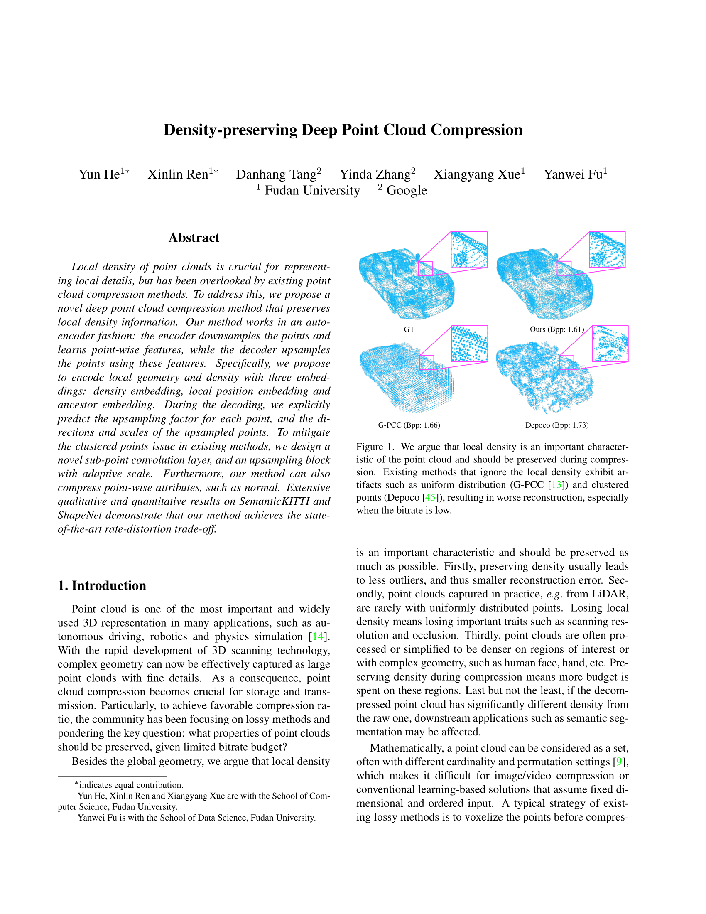

Qualitative comparisons with SOTA.
|
Fudan University Google
|
|
We argue that local density is an important characteristic of the point cloud and should be preserved during compression.
|
Local density of point clouds is crucial for representing local details, but has been overlooked by existing point cloud compression methods. To address this, we propose a novel deep point cloud compression method that preserves local density information. Our method works in an auto-encoder fashion: the encoder downsamples the points and learns point-wise features, while the decoder upsamples the points using these features. Specifically, we propose to encode local geometry and density with three embeddings: density embedding, local position embedding and ancestor embedding. During the decoding, we explicitly predict the upsampling factor for each point, and the directions and scales of the upsampled points. To mitigate the clustered points issue in existing methods, we design a novel sub-point convolution layer, and an upsampling block with adaptive scale. Furthermore, our method can also compress point-wise attributes, such as normal. Extensive qualitative and quantitative results on SemanticKITTI and ShapeNet demonstrate that our method achieves the state-of-the-art rate-distortion trade-off.
|
Our pipeline first partitions the point cloud into small blocks. Each block is then downsampled three times while the local density and geometry patterns of collapsed points are encoded into features.
At the bottleneck, downsampled features are further compressed by an entropy encoder.
The decoder can then use the features to adaptively upsample the downsampled point cloud back to the original geometry and density.
|
|  |
Y. He, X. Ren, D. Tang, Y. Zhang, X. Xue, Y. Fu
Density-preserving Deep Point Cloud Compression CVPR 2022 [arXiv] [GitHub] |
|
Quantitative comparisons with SOTA.
|
|
|
|
Qualitative comparisons with SOTA.
|
Acknowledgements
This work was supported in part by
NSFC under Grant (No. 62076067), SMSTM Project
(2021SHZDZX0103), and Shanghai Research and Innovation Functional Program (17DZ2260900). Danhang Tang,
Yinda Zhang and Yanwei Fu are the corresponding authours.
The website is modified from this template.
|